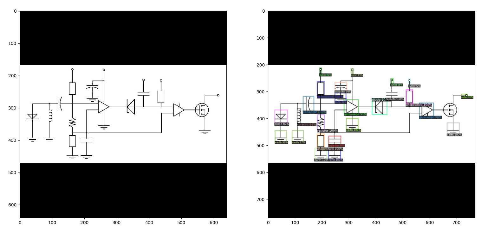

Faster RCNN
Just a random example, training from scratch, to recognize the labels of the electric diagram. It includes, capacitor,core-air,core-hiron,diode,outlet,resistor,transistor-npn,unspecified,transistor-pnp,earth,battery,core-iron,gate-ampli,transistor-mosfetp,transistor-mosfetn,diodephoto and relay.

Metrics
$$
\begin{align*}
precision &= \frac{TP}{TP+FP} \\
recall &= \frac{TP}{TP+FN} \\
F1 &= 2 \frac{recall\times precision}{recall+precision}\\
IOU &= \frac{\text{Intersection area between 2 boxes}}{\text{Union Area between 2 boxes}}
\end{align*}
$$
Other relevant object detection algorithms
You only Look once, mask rcnn, Haar features classifier ,etc.
References
- Systems Evaluation Synthetic Documents
- Elephant Detector Training Using Custom Dataset & YOLOV5
- Object Detection on Custom Dataset with YOLOv5 using Pytorch and Python
- yolov5 pytorch ultralytics github
- Yolo-v5 Object Detection on a custom dataset
- facebook research detectron2 github